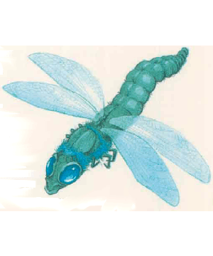

2501
| White | Black | Green | Blue | Red | |
|---|---|---|---|---|---|
| Climate/Terrain: | Varies; see below | Varies; see below | Varies; see below | Varies; see below | Varies; see below |
| Frequency: | Very rare | Very rare | Very rare | Very rare | Very rare |
| Organization: | Solitary | Solitary | Solitary | Solitary | Solitary |
| Activity Cycle: | Day | Day | Day | Day | Day |
| Diet: | Carnivore | Carnivore | Carnivore | Carnivore | Carnivore |
| Intelligence: | Animal (1) | Animal (1) | Animal (1) | Animal (1) | Animal (1) |
| Treasure: | Nil | Nil | Nil | Nil | Nil |
| Alignment: | Neutral | Neutral | Neutral | Neutral | Neutral |
| No. Appearing: | 3d6 | 3d6 | 3d6 | 3d6 | 3d6 |
| Armor Class: | 2 | 1 | 0 | -1 | -2 |
| Movement: | 6, Fl 24 (A) | 6, Fl 24 (A) | 6, Fl 24 (A) | 6, Fl 24 (A) | 6, Fl 24 (A) |
| Hit Dice: | 3 | 3+2 | 4 | 4+2 | 5 |
| THAC0: | 17 | 17 | 17 | 17 | 15 |
| No. of Attacks: | 1 | 1 | 1 | 1 | 1 |
| Damage/Attack: | 1d6 (bite) | 1d6 (bite) | 1d6 (bite) | 1d6 (bite) | 1d6 (bite) |
| Special Attacks: | Breath weapon | Breath weapon | Breath weapon | Breath weapon | Breath weapon |
| Special Defenses: | Nil | Nil | Nil | Nil | Nil |
| Magic Resistance: | Nil | Nil | Nil | Nil | Nil |
| Size: | S (3-4’ long) | S (3-4’ long) | S (3-4’ long) | S (3-4’ long) | S (3-4’ long) |
| Morale: | Average (10) | Average (10) | Average (10) | Average (10) | Average (10) |
| XP Value: | 120 | 175 | 175 | 270 | 270 |
This creature is a magical crossbreed between the comparatively tiny, benign insect by the same name and an actual dragon. Often called a giant dragonfly, the crossbreed measures 3 to 4 feet long and has a subtly draconian head. Otherwise it looks like the insect; it has two pairs of wings, an the front pair is smaller than the rear. The wings never fold back; even when the creature has landed and is resting, they remain outstretched.
Five distinctive types of dragonfly inhabit Mystara: white, black, green, blue, and red. The color receals which species of dragon a creature takes after — that is, it defines the dragonfly’s breath weapon (red, fire; blue, lightning; and so forth).
Note that immature dragonflies, or nymphs, are practically a separate monster in appearanc and behaviour.
Dragonflies have only animal intelligence, and they never talk or use spells.
Combat: Dragonflies dart around very quickly (even normal insect dragonflies are capable of darting at speeds up to 60 miles per hour!), and they are hard to hit. They also can stop instantly and hover in midair before darting off in another direction.
A dragonfly can breathe and bite each round of combat. Its breath weapon inflicts 1 point of damage per Hit Die of the dragonfly. The area affected is only 3 feet long and 1 foot wide; each breath normally affects only one creature. A saving throw vs. breath weapon is allowed only if the victim is not fighting the dragonfly in melee; those in hand-to-hand combat get no saving throw against the breath. Characters who successfully make their saving throws take half damage from the breath weapon. There is no limit to the number of times a dragonfly can breathe.
Habitat/Society: Dragonflies roam nearly anywhere except in cool or cold mountains. Most of the five types prefer warm climates that offer plenty of water. For more information, see individual descriptions below.
Ecology: The relatively tiny insects called dragonflies are insectivores; they feed on smaller insects like mosquitoes. The giant dragonflies of Mystara eagerly devour small rodents, birds, birdsized insects, worms, and slugs. (See individual entries for further detail.)
All dragonflies need standing water to reproduce. For some, this means a journey far from their preferred habitat for the mating season. The female dragonfly lays her eggs under water, attaching the eggs to plants. If she can find a plant large enough for the purpose, she sometimes cuts a slit in the stem or trunk and places the eggs inside. Dragonfly eggs are quite small; half an inch in diameter is typical.
Three to eight weeks after eggs are laid, they hatch. Young dragodies emerge as dragonfly nymphs (see “Nymph” below).
White Dragonfly
These dragonflies range farther north than others, inhabiting conifer forests and the southern fringes of arctic tundra.
Their life cycle is the shortest of the five species, limited by the brief yet intense summers of their homes. Adults emerge from their old nymph bodies in the springtime, and have but one summer to grow fat on arctic insects (especially mosquitoes), small rodents such as rats and lemmings, and the tiny migratory birds that have journeyed to feast on the many insects that buzz under the midnight sun.
In late summer, white dragonflies lay eggs in northem lakes, slow streams, and bogs. When the frost amves, the adult dragonflies die (which is why they never grow beyond 3 Hit Dice). The eggs, however, as well as the nymphs, adapt to the cold; they can survive being frozen through the long, dark winter. Come spring, they hatch and begin the life cyde anew.
The white dragonfly's breath weapon is a blast of freezing cold and ice crystals.
Black Dragonfly
The black dragonfly lives in dank swamps and temperate bogs. It enjoys climates from the tropics to middle latitudes.
Black dragonfiies do not grow very large because there are so many of them; individuals compete intensely to survive within their crowded habitat.
The black dragonfly’s breath weapon is a stream of caustic acid, distilled from unpleasant chemicals natural to the insect’s decomposing home.
Green Dragonfly
The green dragonfly shares the climate range of the black, from tropical to temperate, but it prefers forested areas.
Its breeding is done in lakes and slow rivers more frequently than bogs, though green and black dragonfiies do occasionally compete for territory.
The green dragonfly’s breath weapon takes the form of a small cloud of dense green chlorine gas. The dragonfly’s body processes the chlorine from plain salt (sodium chloride) found in its environment.
Blue Dragonfly
The blue dragonfly is a creature of the plains, roving over wide landscapes and devouring many small mammals and birds, from thrushes to prairie dogs. It rarely eats insects, except of the giant variety, as they do not satisfy its hunger.
The blue dragonfly lays its eggs in ponds and small lakes that dot the prairies, and in the eddies of slow-moving rivers.
Farmers keep a careful eye out for blue dragonflies during the hot months, when grass fires may easily be sparked by the creature’s lightning breath attack.
Red Dragonfly
Most powerful of the dragonflies, the red can grow to 5 feet in length. It inhabits virtually any terrain in temperate and warmer climates, and is known to migrate from one place to another in search of food. Hills and moors often yield the best pickings. Stories are told of red dragonflies that have carried off young lambs; certainly, rabbits are not unusual prey.
The red dragonfly is extraordinarily vicious, and will attack even others of its own kind to satisfy its hunger.
The breath attack of the red dragonfly is a small column of searing fire. It is the most feared dragonfly attack.
The young dragonfly, or nymph, looks quite different from the creature that it will grow to be. Nymphs are long-legged and wingless. A chitinous caranace protects their flat body. Their coloration is dark brown or black. There is no consistent relation between the various nymph hues and adult coloration: it is impossible to tell what type of dragonfly a nymph will become based on its color.
Nymphs grow rapidly. Two to three weeks after hatching, a nymph is about 1 foot long and has 1 Hit Die. After a year of growth, it becomes a 2 Hit Die monster, 2 to 3 feet in length.
Combat: All dragonfly nymphs, regardless of species, have a acidic breath weapon. This is a thin jet of greenish liquid that the nymph spits against a single target up to 3 feet away. Nymphs can spit and bite in the same round, but generally do not do so unless agitated.
The nymph’s breath weapon, like that of the adult dragonfly, inflicts 1 point of damage per Hit Die (that is, 1 or 2 hit points, depending on the nymph’s age). A saving throw is only permitted to those not engaged in hand-to-hand combat with the nymph. If the save is failed, or not allowed, one piece of equipment (determined by the DM) is hit by the acid and must make a successful saving throw vs. acid or be destroyed.
Tbe nymph’s bite causes 1d2 points of damage. Nymphs have an Armor Class of 5 and have no flying move. All other statistics for nymphs are the same as for their adult forms.
Larger nymphs are more aggressive; 2 Hit Die nymphs may attack man-sized creatures if sufficiently hungry. They are too stupid to be turned back by something like a show of force; only after attacking something and finding it inedible (several failed attacks against an armored character, for example) will a nymph break off an attack.
Nymphs propel themselves underwater by taking water in through their mouths, passing it through their bodies, and jetting it out behind. They move, therefore, in sudden spurts (Sw 12). Their streamlined bodies make movement easier when their legs are tucked up next to their carapaces.
Habitat/Society: Most dragonflies lay eggs in fresh water, especially lakes and ponds, but some species have adapted to salt water environments. All nymphs are aquatic.
Nymphs live by instinct, not intelligence. Each is simply interested in eating voraciously. Their preferred prey includes insects, tender plants, and small amphibians. The first nymphs to hatch in a group usually make their siblings their first meal.
Ecology: A nymph’s life cycle is two years long. During warm months, the nymph eats as much as possible; when weather turns cold, it enters a static state like hibernation. The second winter, the nymph undergoes a metamorphosis within its shell. What emerges in the sping is a completely different creature — an adult dragonfly — that crawls out of the husk that held the nymph. Its iridescent wings spread, and it abandons familiar waters for unknown skies.
◆ 511 ◆